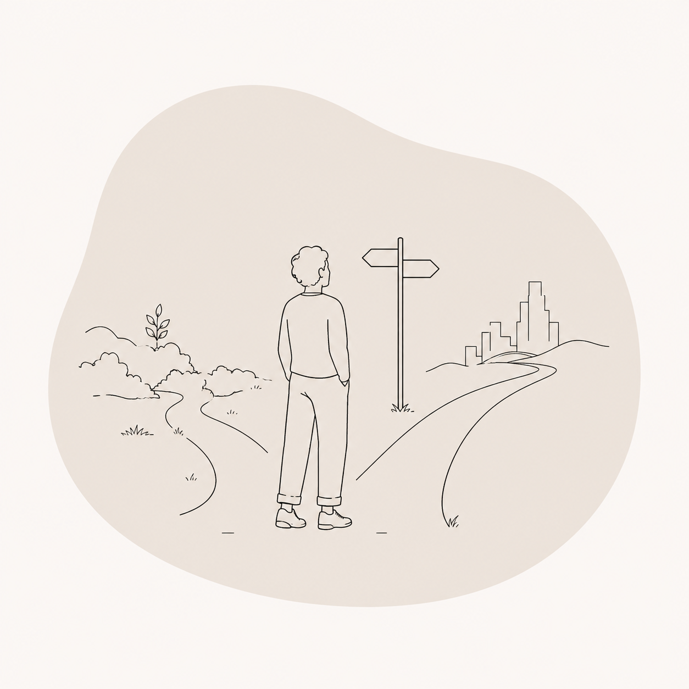

WHO I WORK WITH / 06
LIFE TRANSITIONS

Even positive changes can challenge our nervous system. Starting a new career, ending a relationship, becoming a parent, moving abroad or losing someone important can leave us feeling uncertain about who we are and where we're going.
You might notice:
- Feeling stuck between your old and new identity
- Increased anxiety or self-doubt
- Difficulty making decisions
- Feeling emotionally overwhelmed
- Loss of confidence
- A sense of disconnection
Our work offers space to slow down, make sense of change and reconnect with yourself while navigating life's transitions with greater clarity and resilience.
BOOK A SESSION →